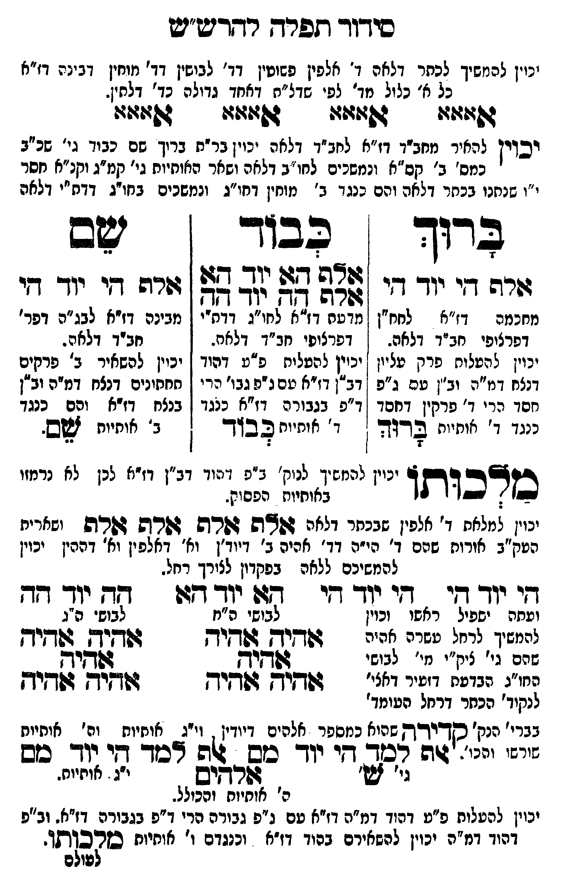

Neue Klartextfassung
[יכוין להמשיך לכתר דלאה ד' אלפין פשוטין דד' אהי"ה דמוחין דבינה דז"א כל א' כלול מד' לפי שדל"ם דאחד גדולה כד' אלפין.] אאאא אאאא אאאא אאאא [ויכוין להמשיך מכחב"ד דז"א לכחב"ד דלאה ויכוין כנ"ל בתוך שם כבוד ג' ס"ג כמס' ב' קס"א ומספרים לכחב"ד דלאה ומכל האחורים גי' קמ"ג וקנ"א מס' י"ו שפעו בכתר דלאה והם כנגד ב' מוחין דחו"ג בכחב"ד דז"א דלאה. [?]] === טבלה === ברוך אלף הי יוד הי [מחכמה דז"א לחח"ן דכללות חב"ד דלאה. יכוין להעלות פרק עליון דנצח דמ"ה וב"ן עם ב"פ חסד יג' ד' פרקין דחסד כנגד ד' אותיות ברוך. [?]] כבוד אלף הא יוד הא אלף הה יוד הה [מבינה דז"א לחו"ג דכלי' דכללות חב"ד דלאה. יכוין להעלות ב"פ דהוד דב"ן דז"א והס'גבו' הרי ד"פ גבורה דז"א כנגד ד' אותיות כבוד. [?]] שם אלף הי יוד הי [מבינה דז"א לבג"ה דפר' חב"ד דלאה. יכוין להשאיר ב' פרקים תחתונים דנצח דמ"ה וב"ן דבינה דז"א והם כנגד ב' אותיות שם. [?]] === סוף טבלה === מלכותו [יכוין להמשיך לנוק' ב"פ דאור דב"ן דז"א לכן לה עצמו בבחינות נפשות.] [יכוין להעלות ד' אלפין שבכתר דלאה] אלף אלף אלף אלף [ומחברים מע"ב שורשם שהם ד' הויו' דד' הויין ביודין וד' אלפין וד' ההין יכוין להמשיכם ללאה שבגרון לצורך רחל. [?]] === טבלה === הי יוד הי הי יוד הי הא יוד הא הה יוד הה [ומסה יפעל כחרו יכוין להמשיך לרחל שהם אהיה — שם גי' קמ"ג מ' לבושי חו"ג שבדעת דזעיר דכלי' לנקוד' כתר דרחל העומד בנז' ת"ת דמ"ה סוד קדירו' שעולה כמספר אלהים דיודין וי"ג אותיות וט' אותיות השם וכרו'. [?]] [לבושי מ"ה] אהיה אהיה אהיה אהיה אהיה [לבושי ס"ג] אהיה אהיה אהיה אהיה אהיה [קדירה עולה כמספר אלהים דיודין, וי"ג אותיות וט' אותיות שורשו וכו'.] אלף למד הי יוד מם אלף למד הי יוד מם אלהים [י"ג אותיות, ט' אותיות והכולל; גי' ש'] === סוף טבלה === [יכוין להעלות פ"ט דאור דמ"ה דז"א עם ב"פ גבורה הרי ד"פ גבורה דז"א. וכ"פ דאור דמ"ה יכוין להכניס ביסוד ז"א וכנגדם ו' אותיות מלכותו. [?]]
Original gegen neue OCR · Niqqud für Vergleich ausgeblendet
Original
[יכויןK149-001 להמשיך לכתרK149-002 דלאה ד' אלפין פשוטין דד' אהי"ה דמוחין דבינהK149-003 דז"א כל א' כלול מד' לפי שדל"םK149-004 דאחד גדולה כד' אלפין.] אאאא אאאא אאאא אאאא [ויכוין להמשיך מכחב"ד דז"א לכחב"דK149-005 דלאה ויכוין כנ"ל בתוךK149-006 שם כבוד ג' ס"גK149-007 כמס' ב' קס"א ומספרים לכחב"דK149-008 דלאה ומכל האחוריםK149-009 גי' קמ"ג וקנ"א מס' י"ו שפעו בכתרK149-010 דלאה והם כנגד ב' מוחין דחו"ג בכחב"ד דז"א דלאה. ] === טבלה === ברוך אלף הי יוד הי [מחכמהK149-011 דז"א לחח"ן דכללותK149-012 חב"ד דלאה. ∅K149-013 יכוין להעלותK149-014 פרק עליון ∅K149-015 דנצח דמ"ה וב"ן עם ב"פK149-016 חסד יג'K149-017 ד' פרקין דחסד ∅K149-018 כנגד ד' אותיות ברוך. ] כבוד אלף הא יוד הא אלף הה יוד הה [מבינה דז"א לחו"ג דכלי' דכללות חב"ד דלאה. יכוין להעלות ב"פ דהוד דב"ן דז"א והס'גבו' הרי ד"פ גבורה דז"א כנגד ד' אותיות כבוד. ] שם אלף הי יוד הי [מבינה דז"א לבג"ה דפר' חב"ד דלאה. יכוין להשאיר ב' פרקים תחתונים דנצח דמ"ה וב"ן דבינה דז"א והם כנגד ב' אותיות שם. ] === סוף טבלה === מלכותו [יכויןK149-019 להמשיך לנוק' ב"פ דאורK149-020 דב"ן דז"אK149-021 לכן לה עצמו בבחינות נפשות.] [יכוין להעלותK149-022 ד' אלפין שבכתר דלאה] אלף אלף אלף אלף [ומחברים מע"ב שורשםK149-023 שהם ד' הויו' דד' הויין ביודין וד' אלפין וד' ההיןK149-024 יכוין להמשיכם ללאה שבגרון לצורךK149-025 רחל. ] === טבלה === היK149-026 יוד הי היK149-027 יוד הי האK149-028 יוד הא הה יוד הה [ומסה יפעל כחרו יכויןK149-029 להמשיך לרחל שהם אהיה — שםK149-030 גי' קמ"ג מ'K149-031 לבושי חו"ג שבדעתK149-032 דזעיר דכלי'K149-033 לנקוד' כתרK149-034 דרחל העומד בנז' ת"ת דמ"ה סוד קדירו' שעולהK149-035 כמספר אלהים דיודין וי"גK149-036 אותיות וט'K149-037 אותיות השם וכרו'. ] [לבושי מ"ה] אהיה אהיה אהיה אהיה אהיה [לבושי ס"ג] אהיה אהיה אהיה אהיה אהיה [קדירה עולה כמספר אלהים דיודין, וי"ג אותיות וט' אותיות שורשו וכו'.] אלף למד הי יוד מם אלף למד הי יוד מם אלהים [י"ג אותיות, ט' אותיות והכולל;K149-038 גי' ש'] === סוף טבלה === [יכוין להעלותK149-039 פ"ט דאור דמ"הK149-040 דז"א עם ב"פK149-041 גבורה הריK149-042 ד"פ גבורה דז"א. וכ"פ דאורK149-043 דמ"ה יכוין להכניס ביסוד ז"אK149-044 וכנגדם ו' אותיות מלכותו. ]K149-045
OCR · fehlbar
סידור תפרד רדזרש יש יכויןK149-001 להמשיך לבתרK149-002 דלאה ד' אלפין פשוטין דד' לבושין דד' מוחין דגינהK149-003 דז"א כל א' כלול מד' לפ' שדל"חK149-004 דאחד גדולה נד' דלתין. ג(:זו 4:2: 04: גוזז: יכוין להאיר מחב"ך דו"א לחב"דK149-005 דלאה יכוין בר"ח בריךK149-006 שם כבוך גי' שכ"בK149-007 כמס' ב' קס"א ונמשכים לחו"בK149-008 דלאה ושאר האותיותK149-009 גי' קמ"ג וקנ"א קסר "ו שנחנו בכחרK149-010 דלאה והם כנגד ב' מוחין דחי"ג ונמשכים בחו"ג דדא"י דלאה בדוך כבוך - ישב לש"ש זן קב 64: י ו ל ר ד ו מחכמחK149-011 דז"א לחח"ן מדשח דז"א לחו"ג דדח"י מבינה דז"א לבג"פם דפר' דפרצופיK149-012 חב"ד דלאה. 1 דפרצופי חב"ד דלאח. חביד דלאה.K149-013 יכוין להטלוחK149-014 פרק עליון יכוין להטליח פ"ע דהוד [ יכיין להשאיר ב' פרקיםK149-015 דנצח דמ"ה וב"ן טם ג"פ 21 דז"א טם נ"פ גבו' הרי 1 חחתונים דנצח דמ"ה וב"ןK149-016 חסד הריK149-017 ד' פרקין דחסד - ד"פ בגבורה דז"א כנגד ן בנצח דז"א ופם כנגדK149-018 כנגד ד' אותיות צרוד ו' איתיוח ב ב"ך נ' אוחיית זשש. על ל ש 4 יעויןK149-019 להמשיך לנוק' ב"פ עודK149-020 דב"ן דז":זK149-021 לכן לא נרמזו סצכותו ליי: הפסוק. ) יכוין למלאחK149-022 ד' אלפין שבכתר דלאה 644ה הרש גורש גורט ישארית הטא"ב אורותK149-023 שהם ד' הי"ה דדד- אהיה ב' דיוד"ן וא' דאלפין וא' דההיןK149-024 יכוין להמשיכם ללאה בפקדון לצירךK149-025 רחל. דיK149-026 יוד די - דיK149-027 יוד דזיו גזלK149-028 יוד דד 77 יור דד ועחה ישפיל ראשו וכוין לבושי ה"ז לבוש ה"גK149-029 להמשיך לרחל טשרה אהוה ד[([יק גחיך ד[([יךן ג[(-יךן שרםK149-030 גי' ציק"י מי'K149-031 לבושי זקדקוךץ זפךקיק הזו"נ הבדענזK149-032 דזעיר דאצי' גפד[יא שקיך גשקיךץ דשדיךץK149-033 לנקוד' הכחרK149-034 דרחל הטומד' בברי' הנק' סדשרדה שהואK149-035 כמספר אלהים דיודין . וייגK149-036 אותיות וה'K149-037 אותיות "- יג"זגה צצג.א'"יוד' צל -ללל דכד שי ((- כשK149-038 גי' זש' לשרשיש י"ג . אוחיוח. ה' אוחיות והכולל. יכוין להעלוסK149-039 פ"ט דהןד גמ"הK149-040 דז"א טם ג"פK149-041 גבורה הקיK149-042 ד"פ בגבור גזל- וב"פ דהודK149-043 דמ"ה יכוין להשאירם בהוד דז"אK149-044 וכנגדם ו' אותיות ללאקלל פולםK149-045